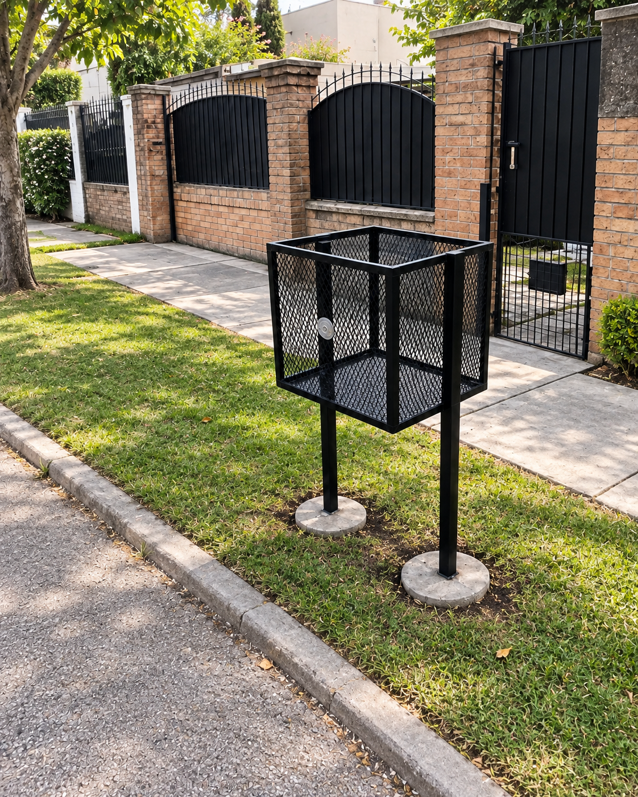
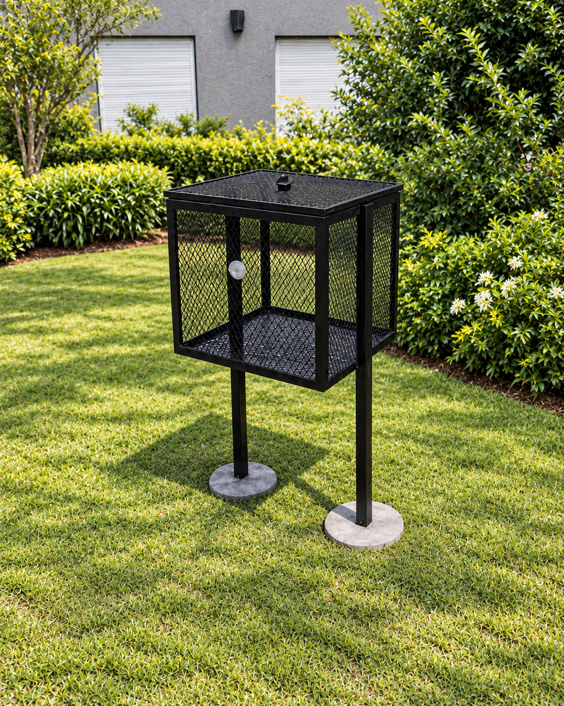
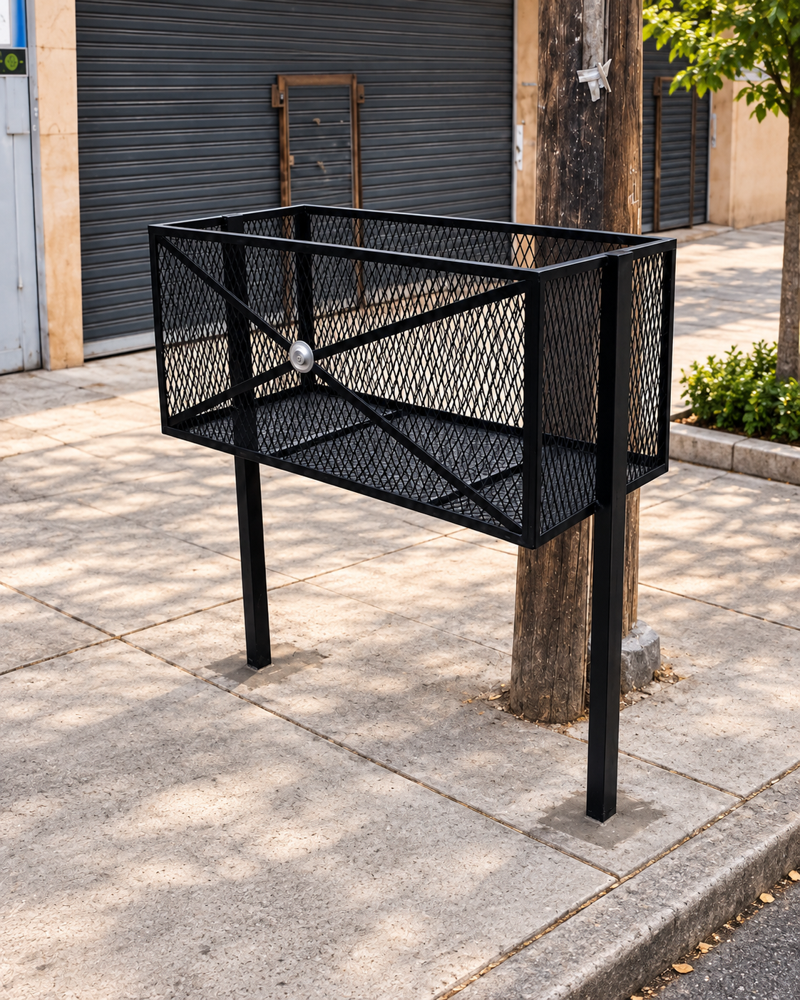
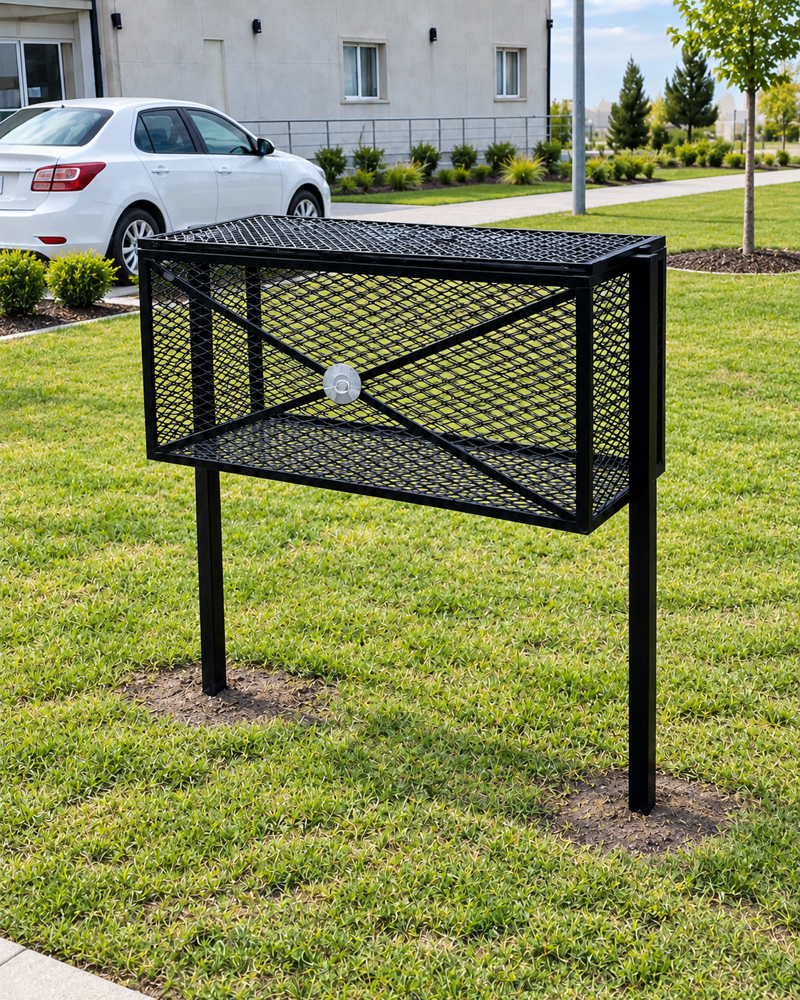

Sin tapa

COMPACTO · SIN TAPA
Modelo 60 cm
- Frente
- 0,60 m
- Ancho / profundidad
- 0,50 / 0,50 m
- Altura total
- 1,50 m
$160.000 Precio final en Buenos Aires
Consultar por WhatsAppVer ficha originalDirecto de fábrica, sin intermediarios
Resistentes. Seguros. Duraderos.
Un lugar para las bolsas.
Más orden para tu vereda.
Envío e instalación sin cargoen todo Buenos Aires.

Elegí tu canasto
Distintos tamaños, la misma calidad.
Elegí entre 60 y 100 cm, con o sin tapa.

COMPACTO · SIN TAPA
$160.000 Precio final en Buenos Aires
Consultar por WhatsAppVer ficha original
MÁS FRENTE · SIN TAPA
$230.000 Precio final en Buenos Aires
Consultar por WhatsAppVer ficha original
MÁS FRENTE · CON TAPA
$250.000 Precio final en Buenos Aires
Consultar por WhatsAppVer ficha originalCOMPACTO · CON TAPA
$180.000 Precio final en Buenos Aires
Consultar por WhatsAppVer ficha originalEl precio publicado incluye el canasto, el envío y la instalación en todo Buenos Aires. Sin cargos adicionales.
Canastos a medida
Fabricamos canastos más grandes a partir de nuestras medidas estándar y diseños específicos para barrios cerrados. Envianos las medidas o el modelo que te pide tu barrio y te asesoramos.
Más que un canasto, una solución para tu vereda.
Entrega e instalación
Comprás directo de fábrica, sin intermediarios. Te acompañamos desde la elección del canasto hasta la instalación en tu casa.
Tu compra, en tres pasos
Recibí atención personalizada para elegir el canasto que necesitás y resolver tus dudas.
Definimos el tamaño, la opción con o sin tapa y los detalles de tu pedido. También fabricamos a medida.
Acordamos la forma de pago, el día y la dirección. Llevamos e instalamos tu canasto sin cargo en todo Buenos Aires.
Zona Norte · Zona Oeste · Zona Sur
Encontranos en Instagram
Conocé las publicaciones recientes, los modelos y las instalaciones que compartimos en Instagram.
@canastosdebasurabuenosairesVer todas las publicacionesSi las publicaciones no se muestran, podés verlas directamente en nuestro perfil.
Antes de elegir
Lo que necesitás saber para preparar tu consulta.
Sí. El envío y la instalación son sin cargo en todo Buenos Aires. El precio publicado de cada modelo estándar es el precio final, sin adicionales por localidad.
Los modelos estándar tienen 60 o 100 cm de frente, 50 cm de ancho, 50 cm de profundidad y 1,50 m de altura total. También fabricamos canastos más grandes a medida y diseños específicos para barrios cerrados.
Sí. Tanto el modelo de 60 cm como el de 100 cm tienen una versión sin tapa y otra con tapa.
Sí, despachamos por Correo Argentino al resto del país. Para destinos fuera de Buenos Aires, consultá el costo y las condiciones del despacho. En todo Buenos Aires, el envío y la instalación son sin cargo.
Sí. El precio de cada modelo estándar es el mismo en todo Buenos Aires e incluye el envío y la instalación, sin cargos adicionales. Aceptamos todos los medios de pago, incluyendo Mercado Pago. Coordiná la opción que prefieras por WhatsApp. Los pedidos a medida se presupuestan según sus medidas y diseño.
Hablemos de tu canasto
Escribinos para recibir atención personalizada y coordinar tu compra. En todo Buenos Aires, el envío y la instalación son sin cargo.
Comentarios de clientes
Comentarios de clientes
Comentarios de ejemploEstos textos ilustran el diseño de la sección. No son testimonios de clientes reales.